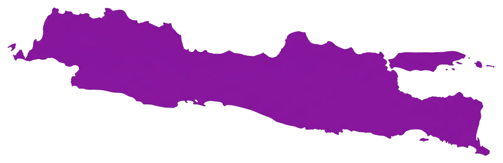
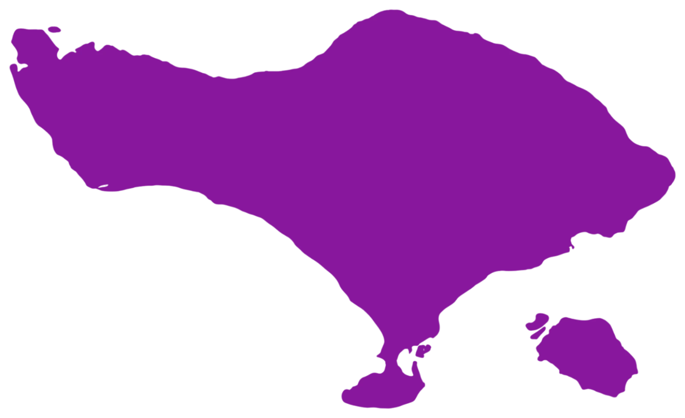

{{ dek }}


Posisi pada peta bersifat perkiraan, dibuat untuk gambaran arah — bukan untuk navigasi.
{{ poc.dio }}
Bulatan hijau = titik utama, ada di peta Layer 1. Ketuk baris mana pun untuk memasukkannya ke permintaan rute.
{{ gua.note }}